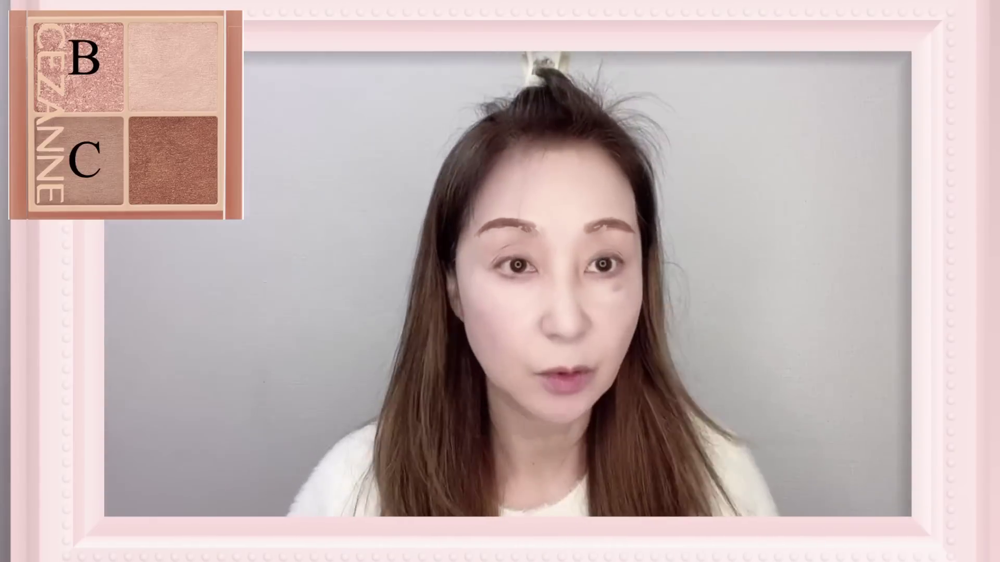
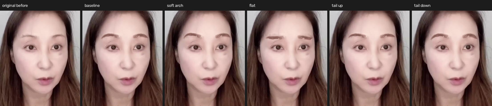

基準
抽出した実眉レイヤーの基準形状
- 眉山
- P3 / P3
- 眉山弧長比
- 0.623 / 0.651
- 変更画素
- 6,343
Issue #5「A. 眉の形状」実装結果
実眉テクスチャをP1（眉頭）からP5（眉尻）の5点曲線として局所変形し、形状を左右別に測定した。数値は形状の記述であり、美しさや自然さの得点ではない。

左右は鏡像化した意味座標で比較する。Xは目頭から外側、Yは目の中心から額方向を正とし、各目の幅で正規化する。

抽出した実眉レイヤーの基準形状
P2〜P5を局所的に持ち上げ、P4を最も高くした形状
P1とP5を結ぶ直線上へ中間点を並べた形状
P3〜P5を段階的に持ち上げた形状
P3〜P5を段階的に下げた形状
棒は各指標内の最小〜最大を相対表示する。値は左右眉の平均。
| 条件 | 眉の長さ目幅 | 面積目幅² | 平均幅目幅 | 眉山位置 / 眉全長比 | 弦からの最大距離目幅 | 眉頭―眉尻角度° | 眉尻 / 眉頭の太さ比 |
|---|---|---|---|---|---|---|---|
| 基準 | 1.685 | 0.452 | 0.270 | 0.637 | 0.292 | -3.86 | 1.300 |
| 柔らかいアーチ | 1.738 | 0.464 | 0.269 | 0.624 | 0.324 | -2.47 | 1.313 |
| 平坦化 | 1.539 | 0.469 | 0.308 | 0.000 | 0.018 | -3.86 | 1.162 |
| 眉尻上げ | 1.643 | 0.426 | 0.262 | 0.655 | 0.238 | 0.09 | 1.189 |
| 眉尻下げ | 1.736 | 0.487 | 0.283 | 0.618 | 0.344 | -7.89 | 1.440 |
すべて絶対差。角度以外は目幅などで正規化した値。
| 条件 | 長さ | 面積 | 平均幅 | 眉山位置 | 曲率 | 角度 | 太さ比 |
|---|---|---|---|---|---|---|---|
| 基準 | 0.195 | 0.068 | 0.072 | 0.028 | 0.001 | 1.39 | 0.244 |
| 柔らかいアーチ | 0.183 | 0.080 | 0.074 | 0.024 | 0.002 | 1.70 | 0.170 |
| 平坦化 | 0.225 | 0.068 | 0.089 | 0.000 | 0.006 | 1.39 | 0.348 |
| 眉尻上げ | 0.203 | 0.059 | 0.068 | 0.035 | 0.007 | 2.26 | 0.283 |
| 眉尻下げ | 0.186 | 0.086 | 0.080 | 0.022 | 0.009 | 0.44 | 0.184 |
| 条件 | 側 | 長さ px | 面積 px² | 平均幅 px | 眉山 | 眉山比 | 曲率 px | 角度 | 眉尻/眉頭太さ |
|---|---|---|---|---|---|---|---|---|---|
| 基準 | 画面左 | 126.6 | 2106.0 | 16.6 | P3 | 0.623 | 20.7 | -4.6° | 1.422 |
| 基準 | 画面右 | 105.4 | 2142.0 | 20.3 | P3 | 0.651 | 19.4 | -3.2° | 1.178 |
| 柔らかいアーチ | 画面左 | 129.9 | 2135.8 | 16.4 | P3 | 0.612 | 22.9 | -3.3° | 1.398 |
| 柔らかいアーチ | 画面右 | 109.3 | 2219.5 | 20.3 | P3 | 0.636 | 21.6 | -1.6° | 1.228 |
| 平坦化 | 画面左 | 117.3 | 2194.2 | 18.7 | P1 | 0.000 | 1.5 | -4.6° | 1.336 |
| 平坦化 | 画面右 | 94.7 | 2219.5 | 23.4 | P1 | 0.000 | 1.0 | -3.2° | 0.988 |
| 眉尻上げ | 画面左 | 123.9 | 2002.7 | 16.2 | P3 | 0.637 | 17.2 | -1.0° | 1.331 |
| 眉尻上げ | 画面右 | 102.3 | 2009.1 | 19.6 | P3 | 0.672 | 15.6 | 1.2° | 1.048 |
| 眉尻下げ | 画面左 | 129.9 | 2238.7 | 17.2 | P3 | 0.607 | 24.1 | -8.1° | 1.532 |
| 眉尻下げ | 画面右 | 109.1 | 2335.2 | 21.4 | P3 | 0.628 | 23.1 | -7.7° | 1.348 |